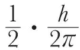
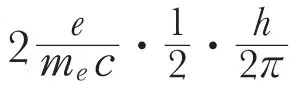
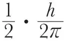
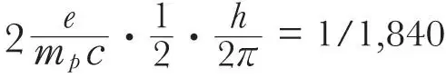

中文
中文I. Estermann et al.
Editor’s Note
Paul Dirac’s theory of the electron predicted that it has a quantum-mechanical spin of 1/2 and a magnetic moment equal to 1 Bohr magneton. As the theory would seem to apply to any elementary particle of spin 1/2, physicists in the early 1930s expected the proton to behave similarly, having a magnetic moment smaller by the inverse ratio of their masses (1/1,840). But here Immanuel Estermann and colleagues announce a very surprising result: the magnetic moment of the proton is around 2.5 times larger than that. The result indicated that Dirac’s theory failed in some important respects for the proton, and supplied the first experimental evidence that nuclear particles (nucleons) have internal structure. 中文
THE spin of the electron has the value

, and its magnetic moment has the value
, or 1 Bohr magneton. The spin of the proton has the same value,
, as that of the electron. Thus for the magnetic moment of the proton the value
Bohr magneton = 1 nuclear magneton is to be expected. 中文
So far as we know, the only method at present available for the determination of this moment is the deflection of a beam of hydrogen molecules in an inhomogeneous magnetic field (Stern-Gerlach experiment). In the hydrogen molecule, the spins of the two electrons are anti-parallel and cancel out. Thus the magnetic moment of the molecule has two sources: (1) the rotation of the molecule as a whole, which is equivalent to the rotation of charged particles, and leads therefore to a magnetic moment as arising from a circular current; and (2) the magnetic moments of the two protons. 中文
In the case of para-hydrogen, the spins of the two protons are anti-parallel, their magnetic moments cancel out, and only the rotational moment remains. At low temperatures (liquid air temperature), practically all the molecules are in the rotational quantum state 0 and therefore non-magnetic. This has been proved by experiment. At higher temperatures (for example, room temperature) a certain proportion of the molecules, which may be calculated from Boltzmann’s law, are in higher rotational quantum states, mainly in the state 2. The deflection experiments with para-hydrogen at room temperature allow, therefore, the determination of the rotational moment, which has been found to be between 0.8 and 0.9 nuclear magnetons per unit quantum number. 中文
In the case of ortho-hydrogen, the lowest rotational quantum state possible is the state 1. Therefore, even at the lowest temperatures, the rotational magnetic moment is superimposed on that due to the two protons with parallel spin. Since, however, the rotational moment is known from the experiments with pure para-hydrogen, the moment of the protons can be determined from deflection experiments with ortho-hydrogen, or with ordinary hydrogen consisting of 75 percent ortho- and 25 percent para-hydrogen. The value obtained is 5 nuclear magnetons for the two protons in the ortho-hydrogen molecule, that is, 2.5 (and not 1) nuclear magnetons for the proton. 中文
This is a very striking result, but further experiments carried out with increased accuracy and over a wide range of experimental conditions (such as temperature, width of beam, etc.) have shown that it is correct within a limit of less than 10 percent. 中文
A more detailed account of these experiments will appear in the Zeitschrift für Physik. 中文
(132, 169-170; 1933)
I. Estermann, R. Frisch, O. Stern: Institut für physikalische Chemie, Hamburgischer Universität, June 19.